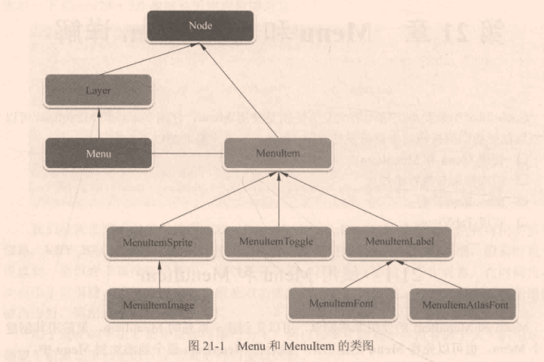

生活中，所有事情都有最后一次。你会最后一次出门，最后一次吃你最喜欢的菜，最后一次听一首歌，或者最后一次呼吸。但是在那之前，你有很多机会做所有这些事情，珍惜你做的每一次。
说明
本文是在团队内组织共读会，所做的读书笔记。
选择这本书，也是带领团队成员更深刻了解自己平常所使用的的控件在引擎层的实现，对以后排查问题，以及了解整个游戏框架引擎层面，找到自己未来更感兴趣的发展方向都有很大的价值。
入门
启航
Cocos2d-x是一款开源的手机游戏开发框架。
核心使用C++编写，支持C++、Lua、JavaScript三种编程语言接口，支持开发跨平台的游戏。
主要优点
- 跨平台
- 高性能
- 高兼容性
- 可热更新
- 可定制
- 易用性
主要应用在 手机游戏、儿童教育软件、网络多媒体UI解决方案等交互性的图形化应用。
较为流行版本 Cocos2d-x v3.3 / v3.10 / v3.17
游戏开发框架
游戏开发框架实现了各个平台相关的封装，提供了图像渲染、UI系统、输入交互、文件操作、动作动画、消息系统、时间调度、音乐音效、物理引擎、脚本绑定等一系列基础功能，让开发者无需从最基础去封装实现，而是以现有的方案去快速开发产品，并且可对所需要的部分进行优化修改。
类比
Unity
Unreal Engine
v4
现在常用的都是 v3版本，例如 v3.3 与 v3.10；然后各项目组在这基础上进行本项目的定制化优化改造。
官方最新的版本是 v4；v4版本最大的变动是在苹果系统使用Metal替代OpenGL ES作为渲染引擎；并且删除对JS部分的支持。
v4版本仅仅适用于支持 Metal 的 iOS/Mac设备。
目前OpenGL & DirectX 的组合，逐渐在被 Vulkan & Metal 替代。
| OpenGL | OpenGL ES | Direct3D | Vulkan | Metal | |
|---|---|---|---|---|---|
| 平台支持 | Windows, MacOS, Linux | Android, iOS | Windows, Xbox | Windows, Linux, Android, | iOS, MacOS |
| 学习门槛 | 低 | 低 | 高 | 高 | 高 |
Cocos2d-x 主逻辑
轻量级引擎主逻辑
- 初始化场景等
- 主循环每帧调用
- update，处理逻辑
- draw，处理绘制
- 达到退出条件，销毁场景等
Cocos2d-x主逻辑同那些相同；不过有场景树来组织管理所有节点。
- 初始化导演类及视图并绑定
- Director初始化、OpenGL视图初始化
- 设定分辨率等参数并刷新帧率与刷新方法
- 场景初始化，并让导演类运行（加入到场景树）
- 调用各种虚函数刷新方法
处理逻辑的三个入口
- 初始化或销毁时，被自动调用的虚函数方法。
- 例如：init、onEnter、onExit
- 使用定时器定时执行的方法
- 例如：注册在scheduleUpdate后，定时执行的update方法
- 指定事件发生后的回调方法
- 例如：UI按钮的点击回调
错误
引用计数
- 引用计数的处理，如果创建出节点后，若没有绑定到某个已加入场景树的节点上，就会在本帧结束后释放掉。
- 刚创建出的节点，引用计数为1，在创建的时候加入到autorelease池中，在本帧结束时引用计数自动-1，会变为0，然后被释放掉；
- 节点通过retain引用计数+1，release引用计数-1，当引用计数为0时，节点会被立即释放掉。
create与init（二阶段构造机制）
- 将初始化放在init而非create中，是因为在init初始化时候若报错，可以在create中捕获错误，并处理。
警示
- using导入命名空间的代码，放在源文件中，而非头文件中
- 若两个类之间互相包含时，在各自类前加向前声明，以便通过编译
- 使用平台相关API时，注意添加平台预处理判定
指针
任何指针，本质都是存储地址，不因指针类型而改变。
经典问题
1 | // * 前是指针的类型，* 后是对指针的修饰 |
C++11
类型推导
1 | // auto，根据右值，识别类型 |
智能指针
- shared_ptr，引用计数指针；只有在已经没有任何其他shared_ptr指向其原本指向的对象时，才会销毁对象
- weak_ptr，弱指针；并不指向对象，因此不会影响对象销毁
空指针（nullptr）
- 解决NULL二义性问题，NULL可以代表0，也可以代表空指针
- nullptr不能隐式转换为整数，也不能和整数作比较
Lambda特性
1 | [函数外部对象参数](函数参数)->返回值类型 { 函数体 } |
- [] 中的函数外部对象参数，允许在函数体内直接调用函数外部的参数
- () 中的函数参数，同正常的函数参数无异，是每次函数调用传入的变量
- -> 后面跟着函数返回值的类型
- {} 中可以编写逻辑，并使用 [] 和 () 中传入的参数
定义在lambda函数相同作用域的参数引用也可以被使用，这种参数集合一般被称为闭包。
在 [] 中可以填写下面几种类型参数，将定义lambda函数作用域内的变量传入函数体中
- [] 没有任何参数，代表 不传入外部参数
- [a, &b] ，代表传入变量a的值与变量b的引用
- [&]，代表以引用的方式将所有作用域内变量传入
- [=]，代表以值专递的方式将所有作用域内变量传入
- [&, a]，代表除了a用值传递的方式，其他所有作用域内变量使用引用方式传入
- [=, &a]，代表除了a用引用的方式，其他所有作用域内变量使用值传递方式传入
基础框架
控件
节点系统，Node
Node，CCNode.h & CCNode.cpp
Node是场景图的基础元素；场景图所有节点必须是Node类或Node的派生类。

Node类主要特性有：
- 可以包含其他Node对象
- 可以设置定时器回调
- 可以使用动作系统
Node类重点属性：
- position: 坐标；默认(x = 0, y = 0)
- scale: 放缩系数；默认(1)
- rotation: 旋转系数（顺时针方向角度）；默认(0)
- anchor point: 锚点；默认(x = 0, y = 0)
- contentSize: 大小；默认(width = 0, height = 0)
- visible: 可见性；默认(true)
Node绘制流程: Visit & Draw
遍历：
- [Node:visit] 开始遍历节点
- 判断可见性
- 计算当前节点的 flags
- 压入并加载模型矩阵
- 对所有子节点排序
- 遍历所有 ZOrder小于0 的子节点
- 绘制自己
- 遍历所有 ZOrder大于0 的子节点
- 弹出模型矩阵
绘制：
- [Node:draw] 开始绘制节点
方法列表_基础：
- create: 创建
- addChild: 添加节点
- get ChildByTag/ChildByName: 根据tag/name获取节点
- enumerateChildren: 根据正则匹配名字获取节点
- getChildren: 获取所有节点数组
- getChildrenCount: 获取所有节点数量
- set/get Parent: 设置/获取 父节点
- removeFromParent/removeFromParentAndCleanup: 将自己从父节点移除，根据参数决定是否停止所有动作及回调
- removeChild/removeChildByTag/removeChildByName: 移除自己的单个子节点
- removeAllChildren/removeAllChildrenWithCleanup: 移除自己的所有子节点
- isRunning: 正在运行中
- onEnter: Node出现时回调的方法，若存在变换，则在变换开始时调用
- onEnterTransitionDidFinish: Node出现时回调的方法，若存在变换，则在变换结束时调用
- onExit: Node退出时回调的方法，若存在变换，则在变换结束时调用
- onExitTransitionDidStart: Node退出时回调的方法，若存在变换，则在变换开始时调用
- cleanup: 停止所有动作及定时器
- draw: 具体的绘制方法，如何绘制
- visit: 遍历节点，递归调用绘制
- update: 每帧更新
方法列表_支持：
- getAttachedNodeCount: 获取当前Node所在场景树的Node数量
- getDescription: 详细信息，方便Debug
- set/get LocalZOrder(ZOrder): 设置/获取 局部ZOrder
- set/get GlobalZOrder: 设置/获取 全局ZOrder
- updateOrderOfArrival: 当ZOrder相同时，设置到达顺序（方便确定唯一遍历顺序），仅供内部使用
- set/get ScaleX: 设置/获取 X轴放缩系数
- set/get ScaleY: 设置/获取 Y轴放缩系数
- set/get ScaleZ: 设置/获取 Z轴放缩系数
- set/get Scale: 设置/获取 X轴与Y轴放缩系数
- set/get PositionX: 设置/获取 X轴坐标
- set/get PositionY: 设置/获取 Y轴坐标
- set/get Position: 设置/获取 2D坐标，vec2(x, y)
- set/get PositionZ(VertexZ): 设置/获取 Z轴坐标
- set/get Position3D: 设置/获取 3D坐标，vec3(x, y, z)
- set/get PositionNormalized(NormalizedPosition): 设置/获取 归一化坐标，范围[0, 1]
- set/get SkewX: 设置/获取 X轴倾斜角度
- set/get SkewY: 设置/获取 Y轴倾斜角度
- set/get AnchorPoint: 设置/获取 锚点坐标，vec2(x, y)
- getAnchorPointInPoints: 返回锚点的绝对像素值，返回值不再是[0, 1]范围内
- set/get ContentSize: 设置/获取 宽高，Size(width, height)
- set/is Visible: 设置/获取 可见性
- set/get Rotation: 设置/获取 旋转角度，正数为顺时针方向、负数为逆时针方向
- set/get Rotation3D: 设置/获取 3D旋转角度，vec3(x, y, z)
- set/get RotationQuat: 设置/获取 四元数（归一化的）旋转角度，Quaternion(x, y, z, w)
- set/get RotationSkewX(RotationX): X轴旋转倾斜
- set/get RotationSkewY(RotationY): Y轴旋转倾斜
- set/is IgnoreAnchorPointForPosition: 设置/获取 忽略坐标锚点；仅限内部使用，一般针对Scene与Layer
- reorderChild: 修改已加入节点的ZOrder，并重新排序
- sortAllChildren: 在绘制前，根据ZOrder对所有子节点排序
- set/get Tag: 设置/获取 标记；一个数字，通常用来分辨节点（人为定义，非强制唯一）
- set/get Name: 设置/获取 名称；一个字符串，通常用来分辨节点（认为定义，非强制唯一）
- set/get UserData/UserObject: 设置/获取 自定义用户数据指针
- set/get GLProgram/ShaderProgram: 设置/获取 节点的着色器程序
- set/get GLProgramState: 设置/获取 节点着色器程序状态
- scheduleUpdateWithPriorityLua: 定时更新Lua脚本
- getScene: 获取节点所在场景
- getBoundingBox/boundingBox: 获取节点所在父节点坐标系统的包含框
- set/get EventDispatcher: 设置/获取 场景的事件派发器
- set/get ActionManager: 设置/获取 动作管理器
- runAction: 执行动作
- stopAllActions: 停止所有动作
- stopAction: 停止某个动作
- stopActionByTag/stopAllActionByTag: 根据tag停止部分动作
- getActionByTag: 获取某tag的动作
- getNumberOfRunningActions: 获取节点正在执行的动作数量
- getNumberOfRunningActionsByTag: 获取节点正在执行的指定tag的动作数量
- set/get Scheduler: 设置/获取 定时器对象
- isScheduled: 指定定时器是否执行中
- scheduleUpdate: 每帧执行定时器，默认优先级为0的
- scheduleUpdateWithPriority: 自定义优先级执行定时器
- unscheduleUpdate: 停止每帧执行的定时器
- schedule: 执行某个定时器，可配参数：间隔时间、重复次数(-1永远重复）、延迟时间
- scheduleOnce: 执行一次某个定时器，可配参数：延迟时间
- unschedule: 停止执行某个定时器
- pause/resume: 暂停/恢复 所有定时器、动作和事件监听
- pause/resume SchedulerAndActions: 暂停/恢复 所有定时器、动作
- updateTransform: 更新变换
- setAdditionalTransform: 为节点设置一个额外的变换矩阵
- set/get NodeToParentTransform: 返回Node本地空间坐标转换为父节点空间坐标的像素矩阵
- getNodeToParentAffineTransform: 返回Node本地空间坐标转换为父节点空间坐标的仿射变换像素矩阵
- getParentToNodeTransform: 返回父节点空间坐标转换为Node本地空间坐标的像素矩阵
- getParentToNodeAffineTransform: 返回父节点空间坐标转换为Node本地空间坐标的仿射变换像素矩阵
- getNodeToWorldTransform: 返回世界像素矩阵
- getNodeToWorldAffineTransform: 返回世界仿射变换像素矩阵
- getWorldToNodeTransform: 返回逆世界像素矩阵
- getWorldToNodeAffineTransform: 返回逆世界仿射变换像素矩阵
- convertToNodeSpace: 世界坐标转换为节点坐标
- convertToNodeSpaceAR: 世界坐标转换为节点坐标，考虑锚点
- convertToWorldSpace: 节点坐标转换为世界坐标
- convertToWorldSpaceAR: 节点坐标转换为世界坐标，考虑锚点
- convertTouchToNodeSpace: 将触摸坐标转换为节点坐标
- convertTouchToNodeSpaceAR: 将触摸坐标转换为节点坐标，考虑锚点
- add/get/remove Component: 新增/获取/移除 组件
- set/get Opacity: 设置/获取 透明度
- getDisplayedOpacity: 获取显示透明度
- updateDisplayedOpacity: 根据父节点透明度，更新显示透明度
- set/is CascadeOpacityEnabled: 是否开启子节点透明度随父节点透明度变化
- set/get Color: 设置/获取 颜色
- getDisplayedColor: 获取显示颜色
- updateDisplayedColor: 根据父节点颜色更新显示颜色
- set/is CascadeColorEnabled: 是否开启子节点颜色随父节点颜色变化
- set/is OpacityModifyRGB: 是否开启透明度影响颜色
- set/get CameraMask: 相机遮罩
GLProgram 与 GLProgramState
简单来说，一个GLProgram就是着色器程序；
抽离出GLProgramState是为了便于GLProgram重用；
- 比如，对于置灰Shader，灰度色值可能由外部传入；但是仅仅色值的改变就要创建多个GLProgram就比较繁琐
- 于是，整个置灰的Shader着色器程序是可重用的，配置变量的部分，抽离成GLProgramState，来定制化使用
Skew 与 RotationSkew
RotationSkew与Skew区别
- RotationSkew，模拟Flash的倾斜功能
- Skew，真正的倾斜
Component
文件：
- CCComponent.h & CCComponent.cpp
- CCComponentContainer.h & CCComponentContainer.cpp
- CCComponentLua.h & CCComponentLua.cpp
- CCComponentJS.h & CCComponentJS.cpp
Component 方法列表
- create: 创建
- init: 初始化
- update: 更新
- set/is Enabled: 设置/获取 启用
- set/get Name: 设置/获取 名称
- set/get Owner: 设置/获取 自己的拥有者（Node对象）
- serialize: 序列化
- onEnter: 进入回调
- onExit: 退出回调
- onAdd: 添加回调
- onRemove: 移除回调
ComponentContainer 方法列表
- get: 根据名称获取Component
- add: 添加Component
- remove: 根据名称移除Component
- removeAll: 移除所有Component
- visit: 遍历方法；调用所有Component的update方法
- onEnter: 调用所有Component:onEnter
- onExit: 调用所有Component:onExit
Scene，场景
Scene是Node类派生类，通常仅仅用来作为一个抽象的概念。
同时只能存在一个场景，各场景间互斥；创建场景时默认会创建一个相机。
绘制方法 [Scene::render]
- 遍历所有相机
- 重置默认相机 CameraFlag::DEFAULT
- 遍历多视图
- 设置相机的额外变换与投影矩阵
- 压入并加载投影矩阵
- 应用相机FBO、RenderTargets、viewport
- 清空相机背景
- 遍历本场景所有内容 [Scene::visit]
- 开始绘制
- 恢复相机FBO、RenderTargets、viewport
- 遍历多视图
- 弹出投影矩阵
方法列表
- create/createWithSize: 创建/创建指定大小场景
- getDiscription: debug描述
- getCameras: 获取所有相机
- getDefaultCamera: 获取默认相机
- getLights: 获取所有灯光
- render: 绘制
Layer，层
Layer是Node类的派生类，它支持触摸接口。
除了Node的所有特性，Layer还支持接收触摸与重力感应输入。
一个场景中可以存在多个Layer，它们之间并不互斥。
Layer及其相关类：
- Layer, 继承自Node
- LayerColor, 继承自Layer与BlendProtocol；扩展RGBA接口，调整色值及透明度，还可以设置颜色混合
- 【弃】LayerRGBA，继承自Layer与RGBAProtocol；扩展了RGBA接口，调整色值及透明度
- LayerGradient，继承自LayerColor；支持绘制渐变色背景
- LayerRadialGradient，继承自Layer；支持绘制径向渐变背景
- LayerMultiplex，继承自Layer；可管理多个Layer，但同时只有一个可被激活
Layer方法列表
- create: 创建
- onTouchBegan: 触摸开始回调
- onTouchMoved: 触摸移动回调
- onTouchEnded: 触摸结束回调
- onTouchCancelled: 触摸取消回调
- onAcceleration: 重力加速器回调
- onKeyPressed: 键盘输入按压回调
- onKeyReleased: 键盘输入释放回调
Sprite，精灵
Sprite是一个2D图像，可以通过一个图像或者图像的某个矩形区域创建。
优化Sprite绘制准则：
- 将所有图像放在一张图集上
- 对所有图像使用同样的混合方式
Sprite的四种绘制模式
- QUAD；使用2个三角形绘制；占用内存少，但会绘制一些空像素（慢）
- POLYGON；使用多个三角形绘制；占用内存多，但绘制空像素少（快）
- SLICE9；使用18个三角形绘制；用于放缩的按钮和矩形精灵（9宫格）
- QUAD_BATCHNODE；通过静态批次的2个三角形绘制；有一定局限性（给SpriteBatchNode使用）
- 局限性
- 无法给每个Sprite单独设置Alias/Antialias属性，该属性设置在SpriteBatchNode上，对其所有Sprite生效
- 无法给每个Sprite单独设置混合函数
- 不支持 ParallaxNode，但是可以用 proxy sprite 模拟
- Sprite只能挂载其他Sprite节点
- 局限性
Sprite创建流程
- 使用文件名，PolygonInfo，文件名&矩形区域，纹理，SpriteFrame
Sprite方法列表
- create/createWithTexture/createWithSpriteFrame， 创建
- updateTransform，根据旋转、坐标、缩放值更新四边形；仅支持QUAD_BATCHNODE
- set/get BatchNode，设置/获取 SpriteBatchNode
- set/get Texture，设置/获取 纹理
- setTextureRect，更新纹理坐标与矩形顶点信息
- setVertexRect，设置矩形顶点信息
- set/get CenterRect，设置九宫格区域，像素坐标
- set/get CenterRectNormalized，设置九宫格区域，归一化坐标
- set/get SpriteFrame，设置/获取 精灵
- isFrameDisplayed，精灵是否在显示中
- setDisplayFrameWithAnimationName，使用动画名称和索引修改显示帧
- set/is Dirty，设置脏标记
- getQuad，获取 顶点坐标、纹理坐标、色值信息
- isTextureRectRotated，纹理矩形是否被旋转
- set/get AtlasIndex，设置/获取 纹理索引
- set/get TextureAtlas，设置/获取 纹理图集
- getOffsetPosition，获取偏移坐标
- set/is FlippedX，设置/获取 X轴翻转
- set/is FlippedY，设置/获取 Y轴翻转
- set/get PolygonInfo，设置/获取 Polygon信息
- set/is StretchEnabled，设置/获取 拉伸信息
- set/get BlendFunc，设置/获取 颜色混合
- set/get Position，设置/获取 坐标
- set/get Scale/ScaleX/ScaleY，设置/获取 放缩值/横向放缩值/纵向放缩值
- set/get Rotation，设置/获取 旋转值
- set/get SkewX/SkewY，设置/获取 横向倾斜/纵向倾斜
- setIgnoreAnchorPointForPosition，设置忽略坐标锚点
SpriteBatchNode
SpriteBatchNode是一个批处理节点，它可以将自己的节点在一个OpenGL批次内绘制完。
一个SpriteBatchNode只可以关联一张纹理，并且只有Sprite可以作为其子节点，SpriteBatchNode下所有精灵都是用同一种抗锯齿、纹理混合等。
方法列表：
- create/createWithTexture，创建
- set/get Texture，设置/获取 纹理
- set/get TextureAtlas，设置/获取 纹理
- getDescendants，获取子节点数组（SpriteBatchNode特殊方法，其他控件请使用getChildren）
- increaseAtlasCapacity，增加纹理容量
- appendChild，添加一个Sprite
- removeChildAtIndex，移除某索引位置子节点
- removeSpriteFromAtlas，从图集中移除Sprite
- rebuildIndexInOrder，根据层级重新构建索引
- lowest/hightest AtlasIndexInChild，在所有图集中获取 最小/最大 索引
- atlasIndexForChild，获取某层级附近的索引
- reorderBatch，对子节点排序，禁止手动调用
- set/get BlendFunc，设置/获取 颜色混合
- insertQuadFromSprite，在指定索引处插入一个四边形Sprite；该Sprite不会加入到子节点数组中，只会在处理大图集且其中Sprite不刷新时调用，如瓦片地图与大量字符的LabelBMFont
- addSpriteWithoutQuad，将Sprite添加到子节点数组，但并不更新纹理数据
- reserveCapacity，检查容量，当容量不足时，分配新容量
SpriteFrame
实际显示的图片纹理
一个SpriteFrame包含
- 纹理：给Sprite使用的Textrue2D纹理
- 矩形区域：纹理的矩形区域
创建方式：
- 文件名
- 参数
- string 文件名 & Rect 矩形
- string 文件名 & Rect 矩形 & bool 旋转 & Vec2 偏移 & Size 宽高
- 流程
- 赋值
- 纹理
- 矩形（像素单位 & 点单位）
- 偏移（像素单位 & 点单位）
- 初始大小（像素单位 & 点单位）
- 旋转
- 锚点
- 中心矩形区域
- 赋值
- 参数
- 纹理
- 参数
- Texture2D 纹理 & Rect 矩形
- Texutre2D 纹理 & Rect 矩形 & bool 旋转 & Vec2 偏移 & Size 宽高
- 流程
- 赋值
- 纹理名
- 矩形（像素单位 & 点单位）
- 偏移（像素单位 & 点单位）
- 初始大小（像素单位 & 点单位）
- 旋转
- 锚点
- 中心矩形区域
- 赋值
- 参数
九宫格图片
- 图片被切成3X3格子（共9个）
- 四个角（左上、左下、右上、右下）的格子不会变化
- 上、中、下，三个格子在放缩时，进行水平放缩
- 左、中、右，三个格子在放缩时，进行垂直放缩
方法列表：
- create/createWithTexture，创建
- set/get RectInPixels，设置/获取 像素单位的矩形区域
- set/is Rotated，设置/获取 是否旋转
- set/get Rect，设置/获取 矩形区域
- set/has CenterRect，设置/获取 中心矩形区域（针对九宫格）
- set CenterRectInPixels，设置 像素中心矩形区域
- set/get OffsetInPixels，设置/获取 像素偏移
- set/get Offset，设置/获取 偏移
- set/get OriginalSizeInPixels，设置/获取 初始像素大小
- set/get OriginalSize，设置/获取 初始大小
- set/get Texture，设置/获取 纹理
- set/get/has AnchorPoint，设置/获取/检测 锚点坐标
- set/get/has PolygonInfo，设置/获取/检测 多边形信息
SpriteFrameCache
缓存SpriteFrame的单例类
SpriteFrameCache通过解析plist文件及对应图片来加载SpriteFrame
一个 plist 文件，包含如下信息
- frames
- 所有图片映射，key是图片名字，value是一个包含图片信息的字典结构
- 图片信息包含
- spriteOffset，修剪图片与原始图片的中心偏移值
- spriteSize，修剪图片大小
- spriteSourceSize，原始图片大小
- textureRect，图片在图集内矩形区域
- textureRotated，图片是否旋转
- anchor，锚点
- 当使用多边形描边时的信息
- triangles，每个三角形的三个索引，指向顶点信息与顶点UV信息
- vertices，图片的顶点坐标，由x与y组成
- verticesUV，图片图集的顶点信息，由x与y组成
- metadata
- 关于图片图集其他信息
- 信息包含
- format，plist文件格式
- size，纹理大小
- pixelFormat，像素格式
- textureFileName，对应图集名称
- premultiplyAlpha，是否预处理alpha
plist文件样例：1
2
3
4
5
6
7
8
9
10
11
12
13
14
15
16
17
18
19
20
21
22
23
24
25
26
27
28
29
30
31
32
33
34
35
36
37
38
39
40
41
42
43
44
45
46
47
48
49
50
51
52
53
54
55
56
57
58
59
60
61
62
63
64
65
66
67
68
69
70
71
72
73
74
75
76
77
78
79
80
81
82
83
84<?xml version="1.0" encoding="UTF-8"?>
<plist version="1.0">
<dict>
<key>frames</key>
<dict>
<key>bind_sign1.png</key>
<dict>
<key>aliases</key>
<array/>
<key>spriteOffset</key>
<string>{0,0}</string>
<key>spriteSize</key>
<string>{52,58}</string>
<key>spriteSourceSize</key>
<string>{52,58}</string>
<key>textureRect</key>
<string>{{0,170},{52,58}}</string>
<key>textureRotated</key>
<true/>
</dict>
<key>bind_sign2.png</key>
<dict>
<key>aliases</key>
<array/>
<key>spriteOffset</key>
<string>{0,0}</string>
<key>spriteSize</key>
<string>{28,36}</string>
<key>spriteSourceSize</key>
<string>{28,36}</string>
<key>textureRect</key>
<string>{{410,170},{28,36}}</string>
<key>textureRotated</key>
<false/>
</dict>
<key>bind_title1.png</key>
<dict>
<key>aliases</key>
<array/>
<key>spriteOffset</key>
<string>{0,0}</string>
<key>spriteSize</key>
<string>{526,168}</string>
<key>spriteSourceSize</key>
<string>{526,168}</string>
<key>textureRect</key>
<string>{{0,0},{526,168}}</string>
<key>textureRotated</key>
<false/>
</dict>
<key>bind_title2.png</key>
<dict>
<key>aliases</key>
<array/>
<key>spriteOffset</key>
<string>{0,0}</string>
<key>spriteSize</key>
<string>{348,40}</string>
<key>spriteSourceSize</key>
<string>{348,40}</string>
<key>textureRect</key>
<string>{{60,170},{348,40}}</string>
<key>textureRotated</key>
<false/>
</dict>
</dict>
<key>metadata</key>
<dict>
<key>format</key>
<integer>3</integer>
<key>pixelFormat</key>
<string>RGBA8888</string>
<key>premultiplyAlpha</key>
<false/>
<key>realTextureFileName</key>
<string>activityBinding.png</string>
<key>size</key>
<string>{526,222}</string>
<key>textureFileName</key>
<string>activityBinding.png</string>
</dict>
</dict>
</plist>
PlistFramesCache类，主要处理 plist，frame，SpriteFrame的关联对应关系
- 1个plist对应n个frame
- 1个frame对应1个plist
- 1个frame对应1个SpriteFrame
PlistFramesCache 方法列表
- insertFrame，关联 plist、frame、SpriteFrame
- eraseFrame，移除一个frame
- eraseFrames，移除一批frames
- erasePlistIndex，移除一个plist
- clear，清空所有容器
- hasFrame，查看frame是否存在
- isPlistUsed，查看plist是否使用
- at，获取frame对应的SpriteFrame
- getSpriteFrames，获取所有SpriteFrame
- markPlistFull，标记plist状态
- isPlistFull，获取plist状态
SpriteFrameCache 方法列表
- addSpriteFramesWithFile，
- addSpriteFramesWithFileContent，
- addSpriteFrame，
- removeSpriteFrames，
- isSpriteFramesWithFileLoaded，
- removeUnusedSpriteFrames，
- removeSpriteFrameByName，
- removeSpriteFramesFromFile，
- removeSpriteFramesFromFileContent，
- removeSpriteFramesFromTexture，
- getSpriteFrameByName，
- reloadTexture，
Label，文本
引擎使用Label系列节点来实现文字显示的功能。
Label通过FontAtlas来渲染字体，每个字体根据Label类型对应不同字体类，每个字体类都要提供创建FontAtlas的方法，FontAtlas会存储于FontAtlasCache中，方便重用。
旧版类型
- LabelTTF
- 最容易创建的文本，不需要额外资源，使用系统字实现
- 资源：TTF文件
- 优点：创建方便，支持系统字体（节省资源），可显示内容丰富
- 缺点：创建效率低，文字更新效率低，文字效果简陋
- LabelBMFont
- 使用FNT配置文件+图片来显示的文本标签
- 资源：FNT配置文件 与 对应图集
- 优点：效率高于LabelTTF，可以对要显示的字体做定制化美化
- 缺点：只能显示图片中的字符
- LabelAtlas
- 常用于显示数字
- 资源：单图集 或 plist+图集
- 优点：效率高
- 缺点：只能显示有限的ASCII字符，功能简陋
引擎在3.x版本起，保留之前的Label系列类，并且新建Label类来管理所有类型文本。
新版本文本类型
- TTF
- 使用TTF字体文件创建，并使用FontAtlas中的图集渲染，借助于FreeType2库
- BMFONT
- 使用FNT配置文件与图集创建，使用FontAtlas中图集渲染
- CHARMAP
- 使用单图集或plist+图集，使用FontAtlas中图集渲染
- STRING_TEXTURE
- 默认系统字，每次更新重新创建纹理
Label可支持的特效（仅支持 STRING_TEXTURE 和 TTF）
- 阴影
- 发光
- 描边
TextFieldTTF，文本输入框
主要包含两部分
- TextFieldDelegate，文本输入框所需支持的接口
- 用来实现软键盘、输入文本、删除文本、显示的控制
- TextFieldTTF，使用TTF字体实现的简单的文本输入框
- 继承Label，用来实现文本处理
- 继承IMEDelegete，提供文字输入相关虚函数
关于IME
- 由 IMEDelegate 和 IMEDispatcher 组成，IMEDispatcher调用IMEDelegate，IMEDelegate提供文本输入相关虚函数
物理按键 & 重力感应
物理按键
- 使用EventListenerKeyboard来实现物理按键回调与PC键盘消息
- EventKeyboard::KeyCode中定义所有可用按键信息
- 提供按下（onKeyPressed）、松开（onKeyReleased），两种事件回调
重力感应
- 使用EventListenerAcceleration来实现重力感应，但要调用 Device::setAccelerometerEnabled(true) 开启
- 可以注册多个Event
- 重力感应消息并不是当重力发生变化的时候才发送，而是不断发送
- 重力值的极限并非是1，数值会根据力量而增加
Acceleration，记录玩家当前倾斜手机的详细信息，结构如下
- X轴表示手机左右倾斜的值，范围[-1, 1]，代表由左到右
- Y轴表示手机上下倾斜的值，范围[-1, 1]，代表由下到上
- Z轴表示手机朝向，范围[-1, 1]
- 正面朝下为-1
- 正面朝上为1
- 垂直放置为0
Menu & MenuItem
Menu的子节点必须都是MenuItem对象或其子类对象，Menu负责管理MenuItem状态、布局、回调等，MenuItem只负责显示及绑定回调。

配件
Director，导演
负责创建和处理游戏窗口，并且管理如何执行场景。
导演类主要职责还有：
- 初始化OpneGL上下文
- 设置OpenGL深度缓存
- 设置投影
导演类关联的机制
- PoolManager
- Scheduler
- ActionManager
- EventDispatcher
- GLView
- TextureCache
- Renderer
- Console
mainloop，主循环
- 导演类要被释放
- 调用释放方法 Director::purgeDirector
- 导演类要重启
- 调用重启方法 Director::restartDirector
- 导演类合法
- 调用绘制方法 Director::drawScene
- 计算间隔时间，Director::calculateDeltaTime
- 清空引用计数池 PoolManager::clear
- 调用绘制方法 Director::drawScene
一些定义
- 导演类触发的事件
- EVENT_BEFORE_SET_NEXT_SCENE：设置下个场景之前
- EVENT_AFTER_SET_NEXT_SCENE：设置下个场景之后
- EVENT_PROJECTION_CHANGED：投影变化时
- EVENT_BEFORE_UPDATE：定时器的update触发时
- EVENT_AFTER_UPDATE：定时器update触发后
- EVENT_RESET：重置导演类
- EVENT_AFTER_VISIT：场景的绘制触发时
- EVENT_AFTER_DRAW：场景绘制后，数据送到GPU时
- EVENT_BEFORE_DRAW：场景绘制前，清空时
一些枚举1
2
3
4
5
6
7
8
9
10
11
12
13
14
15
16// 矩阵类型
enum class MATRIX_STACK_TYPE
{
MATRIX_STACK_MODELVIEW, // 模型矩阵
MATRIX_STACK_PROJECTION, // 投影矩阵
MATRIX_STACK_TEXTURE, // 纹理矩阵
};
// 投影
enum class Projection
{
_2D, // 2D投影 (正交投影)
_3D, // 3D投影 (fovy=60, znear=0.5, zfar=1500)
CUSTOM, // 投影时，调用 updateProjection 方法
DEFAULT = _3D, // 默认投影
};
方法列表：
- getInstance: 获取导演类，单例类
- getRunningScene: 获取当前正在运行的场景
- set/get AnimationInterval: 获取动画间隔（FPS）
- set/is DisplayStats: 设置/获取 左下角FPS相关显示
- getSecondsPerFrame: 获取绘制每帧秒数
- set/get OpenGLView: 设置/获取 OpenGL视图
- getTextureCache: 获取纹理缓存
- set/is NextDeltaTimeZero: 设置/获取 当前帧到下一帧时间间隔，只会影响一次
- isPaused: 是否暂停
- getTotalFrames: 获取自从导演类开始起的总帧数
- set/get Projection: 设置/获取 OpenGL投影
- setViewport: 设置OpenGL视图
- isSendCleanupToScene: 更换场景后是否收到cleanup消息
- set/get NotificationNode: 设置/获取 通知节点；通知节点在场景visit后被调用，通知节点需要定制visit方法，可以作为钩子使用
- getWinSize/getWinSizeInPixels: 获得OpenGL视图宽高
- getVisibleSize: 获取可见宽高
- getVisibleOrigin: 获取可见原点坐标
- getSafeAreaRect: 获取OpenGL视图安全区域
- convertToGL: 将屏幕坐标转换为OpenGL坐标
- convertToUI: 将OpenGL坐标转换为屏幕坐标
- getZEye: 获取相机与最近裁剪帧距离
- restart: 重新开启导演类
- start/stop Animation: 开始/停止 动画
- drawScene: 绘制场景，每帧自动调用
- purgeCachedData: 清除所有缓存数据，包括 TextureCache、SpriteFrameCache、LabelBMFont cache
- setDefaultValue: 根据配置信息，设置默认值
- setGLDefaultValues: 根据配置信息，设置OpenGL相关默认值
- setAlphaBlending: 设置 是否开启OpenGL的透明度测试
- set/get ClearColor: 设置/获取 清空颜色缓冲区的颜色
- setDepthTest: 设置 是否开启OpenGL深度测试
- mainLoop: 主循环
- set/get ContentScaleFactor: 设置/获取 内容缩放比，做适配等
- set/get Scheduler: 设置/获取 定时器
- set/get ActionManager: 设置/获取 动作管理器
- set/get EventDispatcher: 设置/获取 事件派发器
- getRenderer: 获取渲染器
- getConsole: 获取控制台
- getDeltaTime: 获取mainloop调用间隔
- getFrameRate: 获取帧率
- pushMatrix: 将指定类型矩阵栈顶元素克隆一份，压入指定类型矩阵栈
- pushProjectionMatrix: 将投影矩阵栈顶元素克隆一份，压入投影矩阵栈
- loadMatrix: 将指定矩阵压入指定类型矩阵栈
- popMatrix: 将指定类型矩阵栈顶元素弹出
- getMatrix: 获取指定类型矩阵栈顶元素
- loadProjectionMatrix: 将指定矩阵压入投影矩阵栈
- popProjectionMatrix: 将投影矩阵栈顶元素弹出
- getProjectionMatrix: 获取投影矩阵栈顶元素
- loadIdentityMatrix: 将指定类型的矩阵栈顶元素改为 Mat4::IDENTITY
- loadProjectionIdentityMatrix：将投影矩阵栈顶元素改为 Mat4::IDENTITY
- multiplyMatrix: 将指定类型矩阵栈顶元素与给定矩阵点乘
- multiplyProjectionMatrix: 将投影矩阵栈顶元素与给定矩阵点乘
- resetMatrixStack: 清空所有类型矩阵栈，并将 Mat4::IDENTITY 矩阵压入各矩阵栈
- initProjectionMatrixStack: 初始化投影矩阵栈，压入 Mat4::IDENTITY
- getProjectionMatrixStackSize: 获取投影矩阵栈数量
- getCocos2dThreadId: 获取cocos2d线程id
- isValid: 当前导演类是否合法
场景管理
- runWithScene: 执行场景；仅在执行第一个场景时使用
- pushScene: 压入场景；仅在已有运行的场景时使用
- popScene: 弹出场景；仅在已有运行的场景时使用
- popToRootScene: 弹出到根场景
- popToSceneStackLevel: 弹出道指定层级的场景
- replaceScene: 替换场景
- end: 结束并释放运行的场景
- pause/resume: 暂停/恢复 当前运行的场景
Camera，相机
Action，动作系统
框架
- Node: Node执行Action，将Acion交由ActionManager管理
- Action: Action操作Node，每个Action只能操作一个Node
- ActionManager: 管理所有Action执行
- Schedule: 驱动ActionManger执行；定时器的加速减速、暂停恢复会影响所有Action
runAction特性
- 多次调用runAction，会同步执行多个Action
- 一个Action对象只能被执行一次，多个对象无法执行同一个Action，需要创建多个Action分别给多个对象使用
- 只有当对象被加到场景中，才能执行Action
- 当对象被从场景中移除，cleanup参数将决定是否销毁Action
Action执行流程
- Node执行runAction，将Action添加到 ActionManager中
- ActionManager调用Action执行，Action操作Node
- Scheduler驱动ActionManager:update，ActionManger调用所有执行中的Action的update
- Action执行完毕后，调用stop并同步给ActionManager
Action 分类（不代表继承关系）
- Speed，有速度变化的动作
- Follow，跟随节点的动作
- ActionInstant，瞬时动作
- Show，显示
- Hide，隐藏
- ToggleVisibility，切换可见性
- RemoveSelf，将自己从父节点移除
- FlipX，X轴翻转
- FlipY，Y轴翻转
- Place，放到某一位置
- ActionInterval，持续动作（To 从当前状态变化到指定的状态，是一个绝对的变化；不支持 reverse Action；By 是变化一定的量；支持reverse Action）
- RotateTo/RotateBy，旋转到某值/旋转某值
- MoveTo/MoveBy，移动到某值/移动某值
- SkewTo/SkewBy，倾斜到某个值/倾斜某个值
- ResizeTo/ResizeBy，调整大小到某值，调整大小某值
- JumpTo/JumpBy，跳跃到某点，跳跃某点
- BezierTo/BezierBy，贝塞尔曲线到某值，贝塞尔曲线某值
- ScaleTo/ScaleBy，放缩到某值，放缩某值
- Blink，闪烁几次
- FadeTo，设置透明度到某值
- FadeIn/FadeOut，渐显/渐隐
- TintTo/TintBy，调整色值到某值，调整某些色值
- 组合动作
- Sequence，依次执行
- Repeat，重复N次执行
- RepeatForever，永远重复执行
- Spawn，同时执行
- 变速动作（In 由慢到快，Out 由快到慢）
- Ease In/Out/InOut，线性变换
- EaseExponential In/Out/InOut，指数级变换
- EaseSine In/Out/InOut，正弦曲线变换
- EaseElastic In/Out/InOut，弹性变换
- EaseBounce In/Out/InOut，反弹变换
- EaseBack In/Out/InOut，可以到负
- 扩展动作
- Animate，播放帧动画
- TargetedAction，目标动作
- ReverseTime，时间翻转，update时候，传入1-time（默认是 time）
- DelayTime，延迟时间
- CallFunc，函数动作
- CallFunc，调用函数
- CallFuncN，以Node为第一参数调用函数
- 特效动作
- OrbitCamera，摄像机环绕特效
- Waves3D，3D旗帜翻滚特效
- FlipX3D/FlipY3D，3D翻转
- Lens3D，3D透镜
- Ripple3D，3D涟漪
- Shaky3D，3D摇晃
- Liquid，流体效果
- Waves2D，波浪效果
- Twirl，旋转扭曲
- PageTurn3D，3D翻页
- ShakyTiles3D，3D瓦片抖动
Animation，动画系统
动画技术
- 帧动画
- 使用一系列图片，播放的时候轮流切换图片
- 使用和制作简单，但消耗资源量较大；在制作时要确保图片大小一致且制定好锚点
- 支持播放到某一帧时回调；所有播放到这一帧动画的对象，都会触发事件，需要通过target和userInfo信息进行辨别
- 骨骼动画
- 仿照真实骨骼结构，建立节点数，每个节点算作骨骼的关节，在关节上指定关键帧，通过计算生成中间帧
- 节省资源，方便维护，但制作复杂
帧动画
帧动画 创建流程
- 加载所有用到的图片，存到数组中
- 根据数组，创建Animation对象，保存帧动画动画信息
- 根据Animation对象，创建Animate动作
- 创建Sprite对象，执行Animate动作
Sprite可以运行多个Animate，但Animate间会有冲突，当多个Animate动作同时执行时会相互覆盖。
每个Animate需要一个Animation对象，但一个Animation可以被多个Animate对象重用，使用AnimationCache可以避免Animation的创建和销毁。
进度动画
进度动画是随着进度更新Sprite，将一个Sprite逐渐显示完整的动画，适合用来做进度更新与CD更新。
进度动画主要由Sprite节点、Progress动作和ProgressTimer节点组成。
类型
- 半径扫描
- 水平扫描
- 垂直扫描
- 四边扩散/收缩
Schedule
Schedule职责是按照设定的事件执行指定的回调，引擎中所有计时相关内容，都由Schedule实现。
主要有 Schedule 和 Timer 构成
- Timer
- 负责将一个回调封装为对象，管理回调的计时、触发、保存回调的状态
- 类型
- TimerTargetSelector，封装对象回调
- TimerTargetCallback，封装函数回调
- TimerScriptHandler，封装脚本回调
- Schedule
- 管理大量Timer，负责注册、注销、驱动执行回调等工作
特点
- 支持全局时间放缩、暂停、恢复
- 优先级
- 只有update回调有优先级的概念，优先级按照数值从小到大的顺序执行，值越小优先级越高，默认优先级为0
- 线程安全
- 3.0开始，提供线程安全的定时器功能 performFuncionInCocosThread
更新顺序
- 处理时间缩放
- 遍历update回调（优先级从低到高）
- 遍历对象回调与函数回调
- 清理注销update回调
- 遍历脚本回调
- 遍历执行回调
生效规则
- 顺序先的注册顺序后的回调，本帧执行；顺序后的注册顺序先的回调，下一帧执行；同类型的回调注册看具体回调
- 在脚本回调中注册，当前帧生效，因为脚本回调时直接插入脚本列表尾部
- 在函数回调和对象回调中注册其他对象的回调，生效时间不确定，根据哈希便利的规则而定，若注册自身回调，当前帧生效
- 在update回调中注册，如果要注册的回调优先级低于等于当前回调的优先级，则该帧生效，否则下一帧生效
- 例如
- Node回调中注册添加的所有计时回调，都会在下一帧开始生效
- 单击回调注册添加的所有计时回调，会在当前帧开始生效
机制
内存管理
程序员可操作的内存区域，一般称之为堆栈。
C++内存
- 栈
- 程序调用函数时系统自动创建的内存空间，在函数返回时释放
- 使用栈空间很高效但栈空间容量有限
- 堆
- 程序运行时，开发者动态创建和管理的内存空间，一般使用new&malloc请求，delete&free回收
- 常量存储区
- 程序启动时，自动创建的只读内存空间；主要用来存储const常量及写在代码中的字符串
- 静态存储区
- 程序启动时，自动创建的内存空间；用来存储静态变量和全局变量，可读可写，但不能动态创建
- 程序代码区
- 存储程序代码二进制内容的只读空间
堆与栈：需要更好地控制对象的生命周期，则必须用堆；需要分配大块的或者动态大小的内存，倾向于用堆；其他情况下尽量用栈，保证安全高效，无内存碎片及内存泄漏。
内存泄漏：
- 是什么：当一块堆上的内存，不再被用到却没有被释放，称之为内存泄漏。
- 为什么：
- 函数内动态创建内存，提前return
- 多处引用内存，释放内存责任归属
野指针：
- 是什么：使用已经被释放了的指针
- 为什么：
- 释放指针，并没有手动设置为NULL
- 内存泄漏导致
Cocos2d-x的引用计数机制
- 实现方法
- 构造函数中，设置为1
- 通过retain，计数+1
- 通过release，计数-1
- 通过autorelease，下一帧-1
- 其他
- autorelease优势
- 一次设定后，无须再担心内存泄漏问题
- 完美应对，多处使用对象时，释放内存责任归属问题
- autorelease优势
容器对象的内存管理
对每个添加进来的对象执行一次retian操作，对每个从容器中删除的对象，执行一次release操作
- CCArray/Vector，数组
- 优点：遍历操作高效，使用下标进行随机访问高效，占用连续的内存空间，push_back操作高效
- 缺点：在内部进行插入和删除的效率低，插入的内容超出容量大小时，会有额外消耗
- CCDictionary/Map，key-value 关联容器
- 优点：查找效率高，插入删除效率高
- 缺点：不适合存储非键值对的对象
- CCSet/Set，对STL的set简单封装（主要是retain与release调用）
- 优点：查找效率高，插入删除效率高，可以快速得到两个set之间交集、并集、差集
- 缺点：插入和删除效率低于list，遍历效率低于vector
为什么用copy函数来拷贝对象，而不用赋值方法：使用赋值无法执行retain/release操作，易造成内存泄漏。
内存优化方法
- 使用内存池，管理分配、回收内存；控制内存重用、分配适量内存，回收空闲内存
引擎内存管理
Ref，CCRef.h & CCRef.cpp
Ref类用来管理引用计数，所有Ref类的派生类可以方便的被不同地方调用而不担心内存泄漏。
方法列表
- retain: 引用计数+1
- release: 引用计数-1
- autorelease: 引用计数+1，在下一帧自动-1
- getReferenceCount: 获取当前引用计数值
PoolManager，CCAutoreleasePool.h & CCAutoreleasePool.cpp
AutoreleasePool：管理autorelease对象池
AutoreleasePool方法列表：
- AutoreleasePool: 构造方法，可以简单创建，也可以指定名称；请在栈中创建而不是在堆中
- addObject: 添加Ref对象到池中；同一个对象被多次添加，会调用多次release（不会去重）
- clear: 清空池；将调用所有池中对象的relase方法
- contains: 检测池中是否有指定对象
- dump: 输出所有池中对象（debug用）
PoolManager
引擎中可以有多个autorelease池，管理所有的autorelase池
PoolManager方法列表
- sharedPoolManager: 创建，单例类，全局唯一
- purgePoolManager: 释放
- getCurrentPool: 获得当前autorelease池；引擎中至少存在1个，可以创建自定义的autorelease池
- isObjectInPools: 检测某个对象是否在池中；会遍历所有的池
- [private]push: 压入autorelease池
- [private]pop: 弹出autorelease池
纹理
纹理是加载到内存中，用于渲染的一组图像数据。
将一个纹理应用到一个图元表面的操作，称之为纹理贴图。
图片往往占据一个游戏中大部分内存和安装包的体积，纹理加载和渲染也是影响游戏运行效率的因素。
纹理可分为
- 1D纹理；一条线
- 2D纹理；一个面
- 3D纹理；一个体
纹素是纹理元素的简称，是纹理空间的基本单位；图像由像素排列而成，纹理由纹素排列而成，使用图片生成纹理之后，像素转换成了纹素。
- 像素转换成纹素后，依旧保存着颜色数据
- 像素是一个测量单位，纹素存在于一个虚拟无尺寸的数学坐标系中，无论纹理对应图像尺寸是多少，纹理尺寸永远是 [0, 1]
- 纹理坐标系中，S、T、R 三个轴分别对应三维坐标系的 X、Y、Z 三个轴
引擎的纹理
在Cocos2d引擎中，纹理被封装到了Texture2D中，Texture2D是Sprite以及一切可显示对象的基础，出了基础图元，其他一切可显示对象最底层都是基于 Texture2D。
Texture2D主要提供
- 图片解析
- 纹理生成
- 纹理渲染
Texture2D 初始化途径
- initWithData，根据加载到内存中的二进制数据初始化
- initWithMipMaps，最终都会调用到此方法初始化
- initWithImage，根据加载到内存的Image图像初始化
- initWithString，根据字符串初始化
纹理初始化考虑的问题：
- MipMap；
- 意味着该纹理有多张图片，并且是多张内容一样但是尺寸不一样的图片，也称为LOD技术，目的是提高渲染质量与效率，但会增加额外的内存
- 如果纹理使用了MipMap，Texture2D将不支持转换该纹理格式
- 纹理压缩
- 对于被压缩的纹理，Texture2D调用不同的OpenGL接口来处理
- 压缩的纹理和MipMap不冲突
- 纹理格式
- 纹理格式转换会发生在普通纹理上
- 从格式A转换到格式B时，Texture2D会分配额外大块内存来存储转换后的纹理，在加载完毕后释放
引擎使用TextureCache来管理纹理
- TextureCache中以纹理名字为key，纹理对象为value
- 当纹理加载到TextureCache后，除非明确的调用删除纹理，否则，纹理会在程序结束时候由引擎释放
- 纹理支持异步加载
引擎使用SpriteFrameCache来管理帧信息
- SpriteFrameCache中以plist文件名为key，SpriteFrame为value
- SpriteFrameCache支持加载与写在plist图集，图集对应的纹理，存在TextureCache中
- SpriteFrame不支持异步加载
异步加载纹理流程
- 判断纹理是否已经加载好
- 是；则直接调用回调函数并返回
- 判断加载队列是否为空
- 是；创建队列以及线程，并Schedule自己的addImageAsyncCallBack方法
- 将要加载的纹理插入到队列尾部，线程会开始加载
- 在线程中，依次加载队列中的纹理，如果纹理加载好则跳过加载步骤
- 所有纹理加载好后，清空释放队列，结束线程
- 在主线程的addImageAsyncCallBack回调中，根据加载完的Image创建Texture2D并执行回调
- 当所有纹理加载完后，addImageAsyncCallBack会注销自己
名词解释
POT（Power Of Two） & NPOT（Non Power Of Two）
- POT表示图片的宽高都是2的幂，NPOT表示图片的宽高不必是2的幂
- 原因：
- 早期设备要求渲染的图片宽高必须是POT（iPhone 3GS之前不支持NPOT，Android设备无不支持）
- 由于字节对齐，可能给纹理渲染带来一点效率提升
纹理混合
- 决定在同一个位置，叠加渲染多种颜色时的最终颜色。正常情况下，任何绘制操作只会被丢弃或完全覆盖。
- OpenGL在渲染时，会将颜色值放道OpenGL的颜色缓冲区，并将每个片段的深度值放道OpenGL的深度缓冲区中
- 关闭深度测试时，颜色会直接被替换
- 开启深度测试时，离摄像机更近的片段的颜色会覆盖原先的颜色
- 颜色混合开启时，将要渲染的颜色会和颜色缓冲区当前的颜色进行一次混合运算，并将运算后的最终值存入颜色缓冲区中
颜色混合公式
- 最终颜色 = 源颜色 源颜色混合系数 + 目标颜色 目标颜色混合系数
Alpha混合公式
- 最终颜色 = 颜色 * Alpha；
Alpha预乘
- 在导出图片资源时，已经计算过Alpha值，不必再运行时计算。
纹理过滤
- 根据一个拉伸或收缩的纹理贴图计算颜色片段的过程；OpenGL使用放大过滤器来处理纹理拉伸、缩小过滤器来处理纹理收缩
- 过滤类型
- GL_LINEAR，线性过滤，少许额外开销，效果会好很多
- GL_NEAREST，最邻近过滤，快速，但效果差
- 各向异性过滤，极大提高纹理过滤质量（一般3D）
纹理环绕
- 正常情况下，纹理坐标范围是 [0, 1]，当指定的纹理坐标在范围之外时，OpenGL会根据当前纹理环绕模式来处理
- 使用纹理环绕时，要指定哪个方向的纹理环绕，坐标系为 S、T、R（对应 X、Y、Z）
- 环绕类型
- GL_REPEAT，重复环绕，使用一小块纹理重复绘制一大片内容，平铺一个几何面
- GL_CLAMP，截取环绕，对范围外的纹理坐标使用边界纹理单元和边界像素融合后的值
- GL_CLAMP_TO_EDGE，截取到边缘环绕，强制对范围外的纹理坐标使用边界像素（沿着合法的纹理单元最后一行或最后一列进行采样）
- GL_CLAMP_TO_BORDER，截取到边框环绕，对范围外的纹理只使用边界纹理单元
Mip贴图
- 使用Mip贴图可以提高渲染性能以及渲染效果，主要解决纹理进行缩放时的闪烁效果，以及提高纹理缩放时的纹理过滤效率。
- Mip贴图使用多张不同分辨率的纹理（分为多隔层），根据当前纹理在屏幕上的实际尺寸来决定使用哪个版本。
- 在Mip贴图的纹理过滤中，只有使用Mip贴图的过滤模式，Mip贴图才会生效
- GL_NEAREST，在Mip基层执行最邻近过滤
- GL_LINEAR，在Mip基层执行线性过滤
- GL_NEAREST_MIPMAP_NEAREST，选择最邻近的Mip层，执行最邻近过滤
- GL_NEAREST_MIPMAP_LINEAR，在Mip层之间执行线性插补，并执行最邻近过滤
- GL_LINEAR_MIPMAP_NEAREST，选择最邻近的Mip层，执行线性过滤
- GL_LINEAR_MIPMAP_LINEAR，在Mip层之间执行线性插补，并执行线性过滤
纹理格式
图片文件的存储格式
- 类型
- JPG
- 优点：压缩率高，占用空间小
- 缺点：有损压缩，显示效果差，不支持透明通道，解压时间久，需要占用大量额外内存，加载到内存时与PNG占用同样内存但效果远低于PNG
- PNG
- 优点：无损压缩，支持透明通道，显示效果好
- 缺点：压缩率低
- TIFF
- 常用语印刷和扫描
- TGA
- 无损压缩，用于存储高质量图像，支持透明通道
- Webp
- Google用来替代PNG的格式，有损压缩，同质量比JPG体积小40%，编码压缩时间比JPG长8倍
- JPG
- 关心问题
- 图片文件占用磁盘空间大小
- 图片品质的高低
- 加载该图片文件的速度
- 引擎是否支持解析文件
纹理在内存中的存储格式
- 类型
- BGRA8888 32位纹理，效果非常好，兼容性高
- RGBA8888 32位纹理，效果非常好，兼容性比较差
- RGB888 24位纹理，效果非常好，不支持透明通道
- RGB565 16位纹理，效果较好，不支持透明通道
- RGBA4444 16位纹理，色彩比RGB5A1略差，但半透明效果良好
- RGBA5A1 16位纹理，色彩较好，但半透明效果差，透明通道仅用于镂空
- 关心问题
- 占用内存的大小
决定图片占用内存的因素
- 图片的尺寸
- 图片的像素格式
决定图片存储空间大小因素
- 图片的文件格式
- 图片内容丰富成都
纹理压缩
纹理压缩是一种专门为在计算机图形渲染系统中存储纹理而使用的图像压缩技术，与普通图形压缩算法的不同之处在于，纹理压缩算法为纹素的随机存取做了优化。
纹理压缩的特点是 解压速度快。
纹理压缩的目的是 节省内存，纹理压缩可以让更多的纹理装入图形硬件中（即显卡）。
纹理压缩图片只与压缩格式以及图片尺寸相关，与内容丰富度无关。即512x512大小图片，通过ETC压缩，大小恒定128KB。
纹理压缩格式对比
- PVRTC
- PowerVR系列GPU支持，移动平台上主要用于 iOS，压缩率最高，图像质量好，但图片必须是POT纹理
- ATITC
- 高通Adreno系列GPU支持，来自以前的ATI，排他性较强，压缩率和质量也没有特别出色的地方
- DXTC/S3TC
- NVIDIA Tegra系列、VivanteGC系列，DXTC和S3TC是同一种压缩格式，是在DirectX和OpenGL中的两个称呼，具有不错的压缩率，主要用于PC与WinPhone
- ETC1
- ARM的Mali系列GPU支持，前面四个也支持，是OpenGL ES图形标准的一部分，安卓平台广泛支持ETC压缩的GPU加速，但不支持Alpha通道，部分显卡不支持NPOT，所以，尽量使用POT纹理
- ETC2
- 向下兼容ETC1，比ETC1质量更好，且支持alpha的单通道和双通道的模式；但需要OpenGL ES 3.0版本以上
- ASTC
- ASTC支持RGBA，且支持NPOT，它的压缩质量好，容量小，性能优；但需要OpenGL ES 3.1版本以上，部分 OpenGL ES 3.0 的GPU也支持；目前基本都支持ASTC了，可以应用起来
运行机制
Cocos2d的运行流程主要封装到 Application 和 Director
- Application，关注程序如何在不同平台运行
- 封装操作系统的细节（当前系统语言、资源搜索路径、应用程序的主循环）
- 主要控制的时机
- 程序启动
- 程序更新
- 程序切换到后台
- 程序从后台切换回前台
- Director，关注游戏内部逻辑的执行
- 游戏的主循环控制、管理资源、设置定时器、管理触摸、重力感应等
Cocos2d在Windows平台运行流程
在WinMain函数中，创建Appliaction，在Appliaction:run方法中，执行AppDelegate的启动方法，实现游戏的主循环及游戏退出；对于Windows下OpenGL窗口创建和窗口消息，都是由GLFW提供的支持，并在处理窗口消息的回调中，将消息翻译并转发给Cocos2d程序。
Windows平台将应用程序分为控制台程序和窗口应用程序两种，两者入口函数不同，Cocos2d程序属于窗口应用程序，入口函数为 winMain
在main.cpp中启动Cocos2d应用程序，实例化AppDelegate对象，并调用run方法
- 设置OpenGL属性
- 回调 程序启动（创建OpenGL窗口等）
- 循环调用，直到OpenGL窗口即将关闭
- 在循环中对帧率进行控制，执行 Director:mainLoop 和 GLView:pollEvents
- 如果强制关闭窗口，调用 Director:end 和 Director:mainLoop 来完成清理工作（正常关闭是 Director:end）
GLFW提供很多回调支持1
2
3
4
5
6
7
8
9
10
11
12
13
14// CCGLViewImpl-desktop.cpp
// GLFW callbacks
void onGLFWError(int errorID, const char* errorDesc);
void onGLFWMouseCallBack(GLFWwindow* window, int button, int action, int modify);
void onGLFWMouseMoveCallBack(GLFWwindow* window, double x, double y);
void onGLFWMouseScrollCallback(GLFWwindow* window, double x, double y);
void onGLFWKeyCallback(GLFWwindow* window, int key, int scancode, int action, int mods);
void onGLFWCharCallback(GLFWwindow* window, unsigned int character);
void onGLFWWindowPosCallback(GLFWwindow* windows, int x, int y);
void onGLFWframebuffersize(GLFWwindow* window, int w, int h);
void onGLFWWindowSizeFunCallback(GLFWwindow *window, int width, int height);
void onGLFWWindowIconifyCallback(GLFWwindow* window, int iconified);
void onGLFWWindowFocusCallback(GLFWwindow* window, int focused);
Cocos2d在Android平台运行流程
Android程序主要使用Java进行开发，使用JNI技术实现C++与Java语言的互相调用，从而让Cocos2d引擎的C++代码能够在Android下执行。
Android程序的入口是一个Activity，一个应用程序可以有多个Activity，入口Activity是AndroidMainfest.xml的第一个Activity。
Cocos2d引擎 3.x版本中，统一生成AppActivity，设置为程序入口。
在AndroidMainfest.xml配置文件中，还有一些其他重要的配置项。
自动生成的Activity（也就是AppActivity）继承与Cocos2dxActivity
- Android程序启动，创建AppActivity:onCreate
- 加载C++逻辑代码，编译一个so动态链接库
- Android加载so动态链接库，加载完后可以在Java中通过JNI调用C++的native函数
- Cocos2dxActivity初始化
- 初始化Cocos2dxHandler、Cocos2dxHelper、Cocos2dxVideoHelper等
- 创建OpenGL视图
- 各种初始化回调后，调用到Application:run，并进入主循环
- 游戏的逻辑由Cocos2dxRenderer:onDrawFrame驱动
相对于Windows是GLFW来支持各种回调，在Android中是通过 Cocos2dxGLSurfaceView来捕获消息，并回调引擎方法。
Cocos2d在iOS平台运行流程
iOS程序使用Object-C语言进行开发，不同于JAVA需要借助于JNI，Object-C语言可以直接调用C++语言。
在Mac上使用Cocoa架构来编写程序，在iOS上使用Cocoa Touch架构运行，两者关系如同 OpenGL 与 OpenGL ES。
- Cocos2d-x引擎也是从Cocoa架构发展而来的，该架构中包含几大框架（类库）
- Foundation，通用基础类库，提供NSString、NSDictionary、NSArray这种基础容器
- AppKit（Cocoa），用于开发Mac程序，实现窗口界面及交互功能
- UIKit（Cocoa Touch），开发iOS程序，实现窗口界面及交互功能
- Cocoa架构使用MVC模式，开发者使用各种Controller操纵程序视图及模型
启动流程
- UIAppliacation启动后，调用AppController方法
- 初始化OpenGL配置参数，创建全屏UIWindows显示
- 创建OpenGL视图CCEAGLView，实现渲染，并处理UI交互逻辑
- 使用CCEAGLView创建出iOS下的GLViewImpl对象，并将其设置为显示视图
- 执行Application:run，进入游戏主循环
- CCEAGLView创建的CCES2Renderer执行渲染
对应于WindowGLFW的监听与Android的Cocos2dxGLSurfaceView的捕获，iOS的CCEAGLView继承于UIView，它本身可以监听玩家触摸及键盘弹出关闭消息，重力感应则有单独的CCAccelerometerDispatcher处理。
渲染机制
所有的渲染功能都由专门的Renderer来处理，降低耦合度，通过自动合并渲染批次更是极大的提升了渲染效率。
合批限制
- 一次只能渲染一张纹理
- 使用统一的混合方式
- 使用同一个Shader，且该Shader不可使用uniform
- 当前待渲染的定点数量没超过指定值（65536）
- 如果使用SpriteBatchNode合批，子节点必须是Sprite
渲染流程
- 遍历节点 Node:visit
- 先遍历节点ZOrder小于0的节点 Node:visit
- 调用节点渲染方法，向Renderer添加渲染命令 Node:draw
- 再遍历节点ZOrder大于0的节点 Node:visit
- 调用Renderer，开始渲染
Renderer
- 职责
- 管理RenderQueue
- 执行RenderCommand
- 渲染顺序
- 2D Z轴小于0的物体：根据设置决定是否开启深度测试
- 3D 不透明物体：开启深度测试
- 3D 透明物体：关闭深度测试
- 2D Z轴等于0的物体：根据设置决定是否开启深度测试
- 2D Z轴大于0的物体：根据设置决定是否开启深度测试
RenderQueue
- 管理RenderCommand，设置优先级
- 类型
- 普通的 RenderQueue，会根据RenderCommand的Z值（大于0，小于0，等于0），分成三个列表
- 专门负责 3D透明渲染的 TransparentRenderQueue，只有一个列表
RenderCommand
- 渲染架构中最小单元，描述渲染所需基础信息，并实现渲染操作
- 类型
- TrianglesCommand
- 渲染一系列三角形，根据glProgram、textureID、BlendFunc生成材质ID
- 初始化：
- globalOrder，全局Z轴坐标
- textureID，纹理ID
- GLProgramState，Shader
- BlendFunc，颜色混合
- Triangles，一系列三角形顶点信息
- Mat4，模型视图矩阵
- QuadCommand
- 继承自TrianglesCommand，渲染一个四边形图元
- 初始化：
- globalOrder，全局Z轴坐标
- textureID，纹理ID
- GLProgramState，Shader
- BlendFunc，颜色混合
- V3F_C4B_T2F_Quad*，一系列顶点信息
- MAat4，模型视图矩阵
- 例如：Sprite、AtlasNode、Skin、ParticlesSystemQuad等
- MeshCommand
- 渲染3D模型，包含大量关于Shader设置、灯光、材质、裁剪、深度测试渲染相关方法
- GroupCommand
- 辅助渲染命令，用于命令的分组，内部只有一个groupId，ID对应Renderer中的某个RenderQueue
- 流程
- 创建并初始化GroupCommand，生成一个GroupID
- 将GroupCommand添加到Renderer中
- 调用Renderer的pushGroup，切换当前RenderQueue
- 接下来所有addCommand都添加到当前RenderQueue中
- 调用Renderer的popGroup，切换回之前的RenderQueue
- 例如：Armature、NodeGrid、RenderTexture、ClippingNode等
- PrimitiveCommand
- 用于渲染点、直线、曲线、三角形、圆形、四边形等基础图元
- 初始化：
- globalOrder，全局Z轴坐标
- textureID，纹理ID
- GLProgramState，Shader
- BlendFunc，颜色混合
- Mat4，模型视图矩阵
- Primitive，图元顶点信息
- BatchCommand
- 每个BatchCommand都会执行一次DrawCall，且该DrawCall不会合批
- CustomCommand
- 实现自定义渲染，手动调用OpenGL代码进行绘制
- 流程
- 实现CustomCommand渲染方法并设置为CustomCommand的渲染回调
- 将渲染命令添加到Renderer中
- TrianglesCommand
消息机制
事件通知机制是使用观察者模式实现的将事件传递给多个监听对象的机制。
引擎通过EventDispatcher系列来实现事件通知机制。
- EventListener，监听并实现事件触发后的回调
- Event，记录事件内容
- EventDispatcher，管理、触发事件
EventDispatcher使用流程
- 创建EventListener，指定要监听的消息及监听到消息后触发的回调
- 将创建的EventListener注册到EventDispatcher中
- 任意地方需要触发事件，调用 Director::getInstance()->getEventDispatcher()->dispatchEvent(event)
- 不需要监听时间时，将监听器移除，Director::getInstance()->getEventDispatcher()->removeEventListener(listener)
EventDispatcher缺点
- 内部实现复杂，将各种监听、节点顺序都集合到类中不合理，职责不单一
- 代码冗余度高，可读性差
EventListenerTouch，触摸
类型有
- TOUCH_ONE_BY_ONE，EventListenerTouchOneByOne，单点触摸
- 可设置吞噬触摸，独占触摸事件，先后由优先级来指定
- TOUCH_ALL_AT_ONCE，EventListenerTouchAllAtOnce，多点触摸
优先级
- 触摸监听优先级整合到EventDispatcher中
- 方法
- addEventListenerWithSceneGraphPriority，局部优先级，使用指定节点的遮挡顺序来作为优先级，全局优先级默认都为0
- addEventListenerWithFixedPriority，全局优先级，自定义优先级，不能为0
引擎内触摸流程
- 开始，手指按下
- onTouchBegan & onTouchesBegan
- 移动，手指移动
- onTouchMove & onTouchesMove
- 结束，手指抬起
- onTouchEnded & onTouchesEnded
- 中断，被其他系统进程切换（如来电、短信、闹钟等）
- onTouchCancelled & onTouchesCancelled
全局触摸流程
- 用户输入
- 按下、移动、抬起
- 操作系统收集到用户输入
- Android、iOS、Windows等
- 操作系统调用引擎接口
- GLViewImpl、handleTouchesXXX、EvnetDispatcher
- 消息机制派发触摸事件
- 对单点触摸监听列表与多点触摸监听列表进行排序
- 拷贝两份触摸点列表，一份给单点触摸用，一份给多点触摸用
- 处理单点触摸监听列表
- 如果触发的是开始触摸事件，则判定是否吞噬触摸，若吞噬则将触摸点从多点触摸列表中移除
- 处理多点触摸监听列表
- 调用具体的监听回调
- EventListenerTouchOneByOne
- EventListenerTouchAllAtOnce
GUI
GUI（Graphical User Interface）图形用户界面，是指采用图形方式显示的计算机操作用户界面。
替代以前，在代码中create创建，setPosition设置位置，让开发者用可视化方式去创建，更加快捷方便。
Cocos2d引擎常配套的工具
- CocosStudio
- CocosBuilder
Cocos2d引擎GUI框架结构
- 所有控件基础，UIWidget
- 所有容器基础（容器也算控件一种，即也继承自UIWidget），UILayout
- 操作UI工具方法，UIHelper
- 支持对Widget遍历
- 支持辅助布局的功能
- 九宫格缩放，Scale9Sprite
- 定义：用一小块图片将其放大来绘制大范围区域而不失真的技术；用井字分割图片，四个角图片不变，中间和四条边拉伸（被拉伸图片要尽量简单）
- 目的：
- 保证图片缩放时的边角不会出现变形和锯齿
- 节省图片资源
- 实现：创建9个Sprite对象，每个对应九宫格一部分，通过setCapInsets传入Rect对象来设置九宫图中间格子位置和尺寸
UIWidget 与 UILayout
UIWidget
- ProcetedNode
- 保护节点，保证节点结构完整性，避免通过removeAllChildren等方法误删所有节点
- 有两个容器，_children容器来处理一般节点， _protectedChildren来处理保护节点
- LayoutParameterProtocol
- 提供布局参数对象 LayoutParameter，处理布局相关
- LayoutParameter，存储控件的布局方式与Margin边距
- LinearLayoutParameter，线性布局
- RelativeLayoutParameter，相对布局
1 | // 线性布局类型 |
设置控件位置与大小，也提供两种模式
- 绝对坐标
- 相对父节点的百分比
控件的触摸判断
- isVisible，自己是否可见
- isEnabled，自己是否激活
- isAncestorsVisible，递归检查父节点是否都可见
- isAncestorsEnabled，递归检查父节点是否都激活
- hitTest，触摸落在自己触摸范围内
创建自定义Widget
- onSizeChanged，控件改变尺寸时的回调，默认通知所有子节点调整位置
- initRenderer，初始化控件时回调，用于初始化控件的渲染对象
- createCloneInstance，控件调用clone时回调
- copySpecialProperties，克隆的控件有自定义属性需要被复制时，在此处处理
- copyClonedWidgetChildren，若不想克隆某些子节点，就调整
UILayout
- 对应Layer，作为容器使用，支持各种背景支持、裁剪、Layout布局等
- 背景支持
- 图片
- 纯色
- 渐变色
- 裁剪
- STENCIL
- 创建一个DrawNode并渲染，根据裁剪大小绘制一个矩形，使用OpenGL模板实现裁剪（显示在裁剪范围内的部分）
- SCISSOR
- 调用glScissor对显示在裁剪范围外的部分进行裁剪
- STENCIL
- Layout布局
- 类型
- 绝对布局，以左下角为原点，不论分辨率如何变化，都按照绝对坐标位置排列
- 相对布局，基于父节点或兄弟节点，以 上 下 左 右 左上 左下 右上 右下 8个方向为停靠点的相对布局，在分辨率变化时保持相对停靠
- 线性横向，相对布局的简化版，去掉上中下的相对设置
- 线性纵向，相对布局的简化版，去掉左中右的相对设置
- 流程
- 每个Layout下的控件，会被设置对应的LayoutParameter
- 在visit函数中，Layout调用doLayout进行布局
- 对子节点排序
- 根据当前布局类型创建LayoutManager
- 调用LayoutManager的doLayout对Layout进行布局
- 注意
- 在创建完后，有所变化，需要手动调用 requestDoLayout 请求刷新布局
- 类型
控件
对UIWidget对象处理Shader无效，需要通过 getVirtualRenderer 来获取对应的渲染节点，然后进行设置。
UIButton
- 组成
- 3个Scale9Sprite节点，通过getVirtualRenderer获取渲染节点
- 1个Label节点，通过getTitleRenderer获取Label节点
- 按钮上的图片支持9宫格放缩
UICheckBox
- 组成
- 5个Sprite节点
- 未选态背景图片
- 选中态背景图片
- 禁用态背景图片
- 选中态前景图片
- 禁用态前景图片
- 5个Sprite节点
UIImageView
- 组成
- 1个Scale9Sprite节点
UILoadingBar
- 组成
- 1个Scale9Sprite节点
- 支持方向
- 左到右
- 右到左
UISlider
- 组成
- 2个Scale9Sprite节点
- 进度条背景
- 进度条前景
- 3个Sprite节点
- 滑钮正常态
- 滑钮选中态
- 滑钮禁用态
- 2个Scale9Sprite节点
文本控件
- 通过 getVirtualRenderer 获取Label节点
- 类型
- UIText，对应 LabelType:: / LabelType::STRING_TEXTURE
- UITextAtlas，对应 LabelType::CHARMAP
- UITextBMFont，对应 LabelType::BMFONT
UIRichText
- RichText
- insertElement&pushBackElement 添加节点
- removeElement 删除节点
- RichElement
- RichElementText，仅支持SystemFont和TTF
- RichElementImage
- RichElementCustomNode
UITextField
- 对TextFieldTTF的封装，自动化处理点击判断，支持自动换行和对齐，设置长度限制，设置密码模式等
UIEditBox
- TextField升级版，不同平台有不同表现，调用平台接口来获取输入
- 支持丰富的输入模式与输入背景框
UIScrollView
- 处理视图的滚动拖拽以及视口裁剪
- 组成：1个innerContainer的Layout，一个ScrollViewBar
UIListView
- 提供方法管理Item，除了增删改查，还支持设置DefaultItem；创建时除了ListView大小，还要指定item大小
UIPageView
- 左右拖动实现翻页
UIWebView
- 浏览网页，底层直接使用操作系统的WebView控件
工具
CocosStudio
文件类型
- 场景，用于编辑场景，需要嵌套其他csd文件，场景大小根据项目分辨率来设置，根节点为Node
- 图层，类似于场景，但有固定大小并且根节点为LayerRGBA
- 节点，编辑节点，可以嵌套其他csd文件，根节点为Node
- 合图，等同于TexturePacker导出的Plist图集，文件后缀为csi
- 3D场景，用于编辑3D场景，可添加相机、节点、3D例子和模型
加载解析csb文件
- [BaseView:__widgetFromJsonFile] ccCSLoader:getInstance():createNodeWithFlatBuffersFile
- doLayout(Helper, self._widget)
- BaseEvent:L10N_Text
分辨率适配
- 布局设置，上下左右图钉
- 百分比位置
- 等比缩放
高级特性
- 回调特性
- 帧事件
- 自定义数据
- 骨骼动画
CocosBuilder
只有Mac版本，不支持Windows
工作流程
- CocosBuilder编辑界面
- 发布项目，生成ccbi
- 将ccbi文件和相关图片资源导入项目中
- 若在CocosBuilder中添加了自定义类，需要在项目中为自定义类编写代码
- 在需要创建界面的地方调用CocosBuilder库的函数创建它们，并添加到游戏场景中